Expeditions: Rome

《The Vanishing of Ethan Carter》是一款着重于探索与发现的第一人称解谜游戏。作为超自然侦探 Paul Prospero，一步步还原 Ethan 的失踪背后的真相及其家族的命运。
游戏类型
探索
功能
单人游戏
《The Vanishing of Ethan Carter》
配置
WINDOWS
最低配置
OS version
Windows
CPU
Intel Core 2 Duo @ 2.2GHz or AMD
Memory
1 GB RAM
GPU
GeForce GTX 550 or Radeon HD 6770
Storage
100 MB
支持的语言
音频:
文本: English
推荐配置
OS version
Windows
CPU
Intel Core i5 2300 or AMD FX6120
Memory
4 GB RAM
GPU
Storage
100 MB
© 2021 Boom Games
基础游戏
-50% ¥228¥114
优惠截止于2022/1/7 00:00
开发商 The Astronauts
发行商 The Astronauts
发行日期 21/12/25
平台 